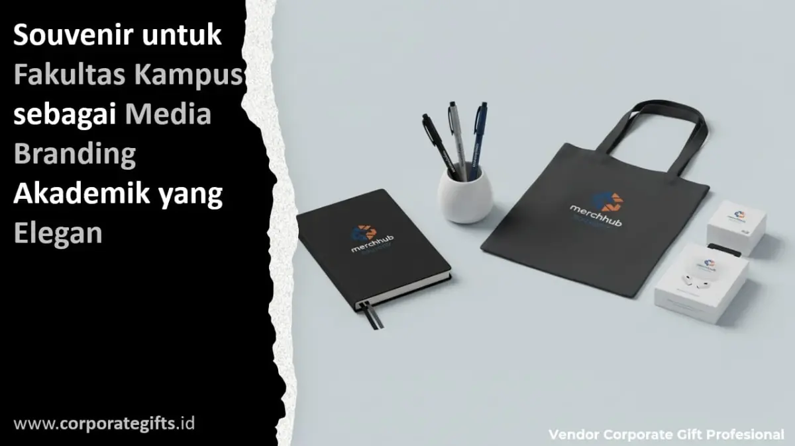

Corporate Gifts ID - Souvenir fakultas kampus adalah merchandise resmi berlogo fakultas yang dibagikan pada momentum wisuda, dies natalis, seminar ilmiah, dan penandatanganan kerja sama antarlembaga sebagai media branding akademik sekaligus simbol kebanggaan almamater. Pilihan cinderamata yang paling populer digunakan meliputi tumbler vacuum flask stainless steel, mug keramik, buku agenda notebook bersampul kulit sintetis, tote bag kanvas, pena logam eksklusif, gift set terpadu, hingga plakat apresiasi berdesain elegan yang selaras dengan identitas visual universitas.
Dalam ekosistem pendidikan tinggi modern, keberadaan merchandise resmi bukan lagi sekadar pelengkap seremonial yang bersifat konsumtif. Divisi kehumasan, kemahasiswaan, dan dekanat menempatkan cinderamata fakultas sebagai instrumen komunikasi strategis yang menjembatani hubungan emosional antara sivitas akademika, alumni, serta pemangku kepentingan industri.
Melalui penyematan logo resmi, filosofi warna makara fakultas, dan standar kualitas material yang prima, setiap souvenir yang beredar di tangan penerima menjadi duta reputasi berjalan yang menyuarakan mutu dan kredibilitas lembaga pendidikan Anda.
Poin Kunci Souvenir Fakultas Kampus:
- Media Diplomasi Akademik: Souvenir resmi merepresentasikan prestise fakultas di mata tamu kehormatan, pembicara seminar internasional, dan mitra industri.
- Personalisasi Karakter Keilmuan: Desain cenderamata disesuaikan dengan kultur bidang studi, menghindari template umum yang tidak mencerminkan filosofi fakultas.
- Fungsionalitas Berkelanjutan: Memprioritaskan barang yang memiliki masa guna panjang seperti tumbler, tas jinjing, dan alat tulis premium agar logo terus terlihat berulang.
- Efisiensi Anggaran Berbasis Kualitas: Kesan eksklusif dicapai lewat presisi cetak, kerapian packaging hardbox, dan konsistensi warna Pantone tanpa pemborosan dana.
Apa Itu Souvenir Fakultas Kampus dan Mengapa Penting?
Souvenir fakultas kampus merupakan lini produk cinderamata berizin resmi yang mengusung atribut grafis khas sebuah fakultas, mencakup lambang kebesaran, palet warna resmi almamater, serta moto ilmiah institusi. Kehadirannya memegang peranan krusial dalam memperkuat identitas korporat (corporate identity) di lingkungan perguruan tinggi.
Bagi mahasiswa dan wisudawan, merchandise fakultas adalah bukti nyata pencapaian intelektual yang membangkitkan rasa bangga menjadi bagian dari komunitas almamater. Sedangkan bagi mitra kerja sama B2B dan lembaga donor, souvenir berkualitas premium mencerminkan ketertiban manajerial dan keseriusan institusi dalam menjalin kemitraan profesional jangka panjang.
Rekomendasi Souvenir Fakultas Berdasarkan Jenis Acara
Kebutuhan spesifikasi barang cinderamata sangat bervariasi bergantung pada profil audiens dan skala formalitas agenda kampus yang diselenggarakan:
- Wisuda dan Dies Natalis: Menuntut bingkisan bernilai monumental dan tahan lama. Gift set eksklusif berisi powerbank grafir laser, mug keramik printing doff, flashdisk logam, dan plakat wisudawan menjadi opsi teratas.
- Seminar Ilmiah, Workshop, dan Konferensi: Membutuhkan perlengkapan kerja fungsional yang langsung dapat dipakai saat acara berlangsung. Paket seminar kit yang terdiri dari notebook spiral cover linen, pulpen logam ballpoint, dan tote bag kanvas bersablon logo fakultas adalah kombinasi paling efektif.
- Kunjungan Kerja Sama Institusi & Tamu VVIP: Mengharuskan penghormatan berkelas tinggi. Plakat kristal kayu, kotak cenderamata hardbox magnetik, dan set pena eksekutif beraksen kuningan akan memberikan kesan diplomasi yang berwibawa.
- Pameran Pendidikan (Education Expo) & Open Campus: Bertujuan menjangkau calon mahasiswa baru secara masif. Tumbler botol minum ramah lingkungan, gantungan kunci akrilik, dan tas spunbond menjadi media promosi berjalan yang sangat ekonomis.
Tabel Perbandingan Souvenir Berdasarkan Jenis Acara Kampus
Matriks berikut merangkum pemetaan produk cenderamata berdasarkan karakteristik agenda seremonial fakultas:
| Jenis Agenda Kampus | Rekomendasi Cinderamata | Tujuan Utama Branding |
|---|---|---|
| Wisuda & Dies Natalis | Executive gift set, mug keramik personal, flashdisk logam | Kenang-kenangan bernilai emosional tinggi dan kebanggaan almamater |
| Seminar & Workshop | Notebook cover kulit, pulpen logam grafir, tote bag kanvas | Media promosi fungsional yang dipakai harian oleh sivitas akademika |
| Kerja Sama Antarlembaga | Plakat kayu kuningan, gift set VIP hardbox, batik fakultas | Membangun impresi profesional dan kehormatan diplomasi institusi |
| Pameran Edukasi & Promosi | Tumbler eco-friendly, lanyard ID card, pouch serbaguna | Memperluas jangkauan brand awareness kampus ke publik luas |

Harmonisasi warna almamater pada notebook, pulpen, dan kemasan hardbox memperkuat kredibilitas kelembagaan fakultas di setiap agenda resmi.
Menyesuaikan Desain dengan Karakter Bidang Keilmuan
Setiap fakultas memiliki kultur akademik dan kepribadian yang berbeda. Desain souvenir yang ideal tidak boleh mengabaikan karakter khas rumpun keilmuan tersebut:
- Fakultas Ekonomi dan Bisnis (FEB): Cenderung serasi dengan gaya modern, rapi, dan minimalis. Pemilihan warna monokrom dengan aksen kulit sintetis hitam atau navy memberikan impresi manajerial yang matang.
- Fakultas Hukum (FH) & Ilmu Sosial Politik (FISIP): Sangat pas menonjolkan gaya klasik yang berwibawa, tegas, dan elegan, memanfaatkan aksen grafir kayu atau medali plakat logam berukir lambang timbangan keadilan.
- Fakultas Teknik & Ilmu Komputer: Lebih mengutamakan kecanggihan fungsionalitas teknologi, seperti flashdisk tipe OTG dual-drive, wireless powerbank, atau organizer kabel laptop tahan air.
- Fakultas Kedokteran & Ilmu Kesehatan: Menekankan aspek higienitas dan kesehatan, seperti tumbler vacuum flask berbahan stainless steel food-grade SUS 304 serta pouch antibakteri.
Pentingnya Konsistensi Identitas Visual Kampus
Identitas visual yang kokoh dibangun atas dasar konsistensi yang ketat. Warna makara fakultas yang melenceng beberapa tingkat nada (shade) dari standar resmi buku pedoman identitas visual universitas dapat merusak citra profesionalitas di hadapan publik eksternal.
Bekerja samalah dengan penyedia jasa pengadaan yang menguasai sistem pencocokan warna Pantone internasional (Pantone Matching System). Pastikan hasil sablon, bordir komputer, maupun cetak UV flatbed menghasilkan akurasi warna yang identik dengan toga wisuda, bendera fakultas, dan materi publikasi digital universitas Anda.
Menjaga Kesan Elegan Tanpa Membebani Anggaran
Mewujudkan cinderamata yang bernilai estetika tinggi tidak selalu mensyaratkan pagu anggaran belanja yang fantastis. Kunci elegansi bertumpu pada tiga aspek mendasar: presisi rancangan tipografi logo, kerapian sambungan jahitan atau pengeleman material, serta keserasian kemasan pembungkus luar.
Sebagai contoh, memilih buku agenda berukuran A5 dengan jilid benang dan penutup tali elastis yang diberi sentuhan cetak emboss timbul (debossing) halus sering kali memancarkan aura kemewahan yang jauh lebih kuat dibanding binder besar yang terkesan kaku. Fokus pada detail pengerjaan adalah rahasia efisiensi pengadaan corporate gift berkelas.
5 Langkah Memilih Souvenir Fakultas yang Tepat
Bagi panitia pengadaan fakultas atau badan eksekutif mahasiswa, ikuti lima tahapan praktis berikut agar proses pemesanan berlangsung tertib dan tepat sasaran:
- Petakan Profil Audiens Penerima: Bedakan secara tegas paket cenderamata untuk mahasiswa umum, narasumber ahli, rektorat, maupun tamu kehormatan luar negeri.
- Tetapkan Batas Pagu Anggaran per Unit: Buat simulasi biaya menyeluruh mencakup harga produk, ongkos cetak logo, pengemasan kotak, dan biaya ekspedisi logistik.
- Prioritaskan Nilai Kegunaan Sehari-Hari: Pilih item yang relevan dengan rutinitas akademik mahasiswa dan staf dosen, seperti tumbler kantor dan alat tulis eksklusif.
- Sediakan Master Aset Grafis Resolusi Tinggi: Kirimkan file logo kampus dalam format vektor (.AI, .EPS, atau .SVG) lengkap dengan spesifikasi kode warna resmi.
- Lakukan Validasi Sampel Fisik (Proofing): Mintalah dummy produk sampel dari vendor untuk menguji durabilitas, kekuatan engsel, ketajaman cetak, dan kelayakan kemasan sebelum proses cetak massal dijalankan.
Pengaruh Souvenir terhadap Ikatan Emosional Alumni
Souvenir resmi fakultas yang awet dan fungsional akan terus menemani perjalanan karier para wisudawan hingga bertahun-tahun kemudian di meja kantor mereka. Setiap kali alumni menggunakan tumbler atau membolak-balik lembar buku catatan bersimbol almamater, memori nostalgia masa perkuliahan akan bangkit kembali.
Rasa kepemilikan (sense of belonging) yang terpelihara ini merupakan aset tak ternilai bagi universitas. Ikatan emosional yang kokoh terbukti mempermudah pelacakan jejak alumni (tracer study), meningkatkan partisipasi program donasi kampus (endowment fund), serta membuka peluang kolaborasi magang dan rekrutmen kerja bagi adik-adik angkatan.
Pertanyaan Seputar Souvenir Fakultas Kampus (FAQ)
Kesimpulan dan Solusi Pengadaan
Souvenir fakultas kampus bukan sekadar buah tangan seremonial sesaat, melainkan investasi reputasi jangka panjang yang memperkuat wibawa dan rekognisi lembaga pendidikan di kancah nasional maupun global. Melalui desain yang konsisten secara visual, material fungsional, dan sentuhan kemasan elegan, setiap cenderamata mampu mengukir kebanggaan abadi bagi seluruh sivitas akademika almamater.

Ditulis oleh: Sholikhatun Nikmah
Creative Product Designer & Bespoke Packaging ConsultantDesainer visual dan konsultan kemasan kreatif di CorporateGifts.ID. Berpengalaman merancang mockup 3D cenderamata akademik, harmonisasi palet warna Pantone almamater, serta kurasi paket suvenir seminar kampus berstandar eksekutif.
Lihat Profil Lengkap & Panduan Lainnya